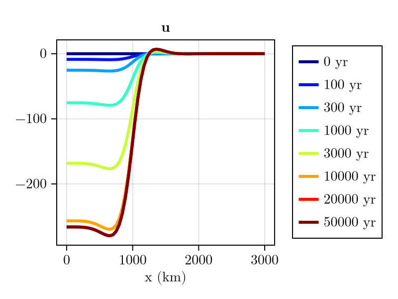
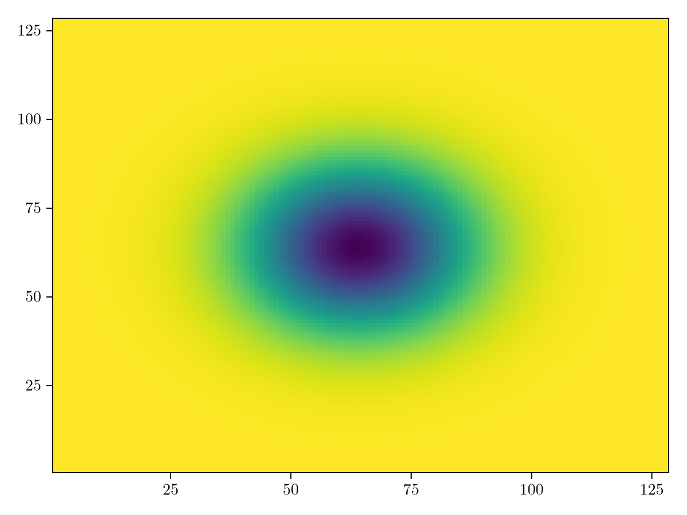
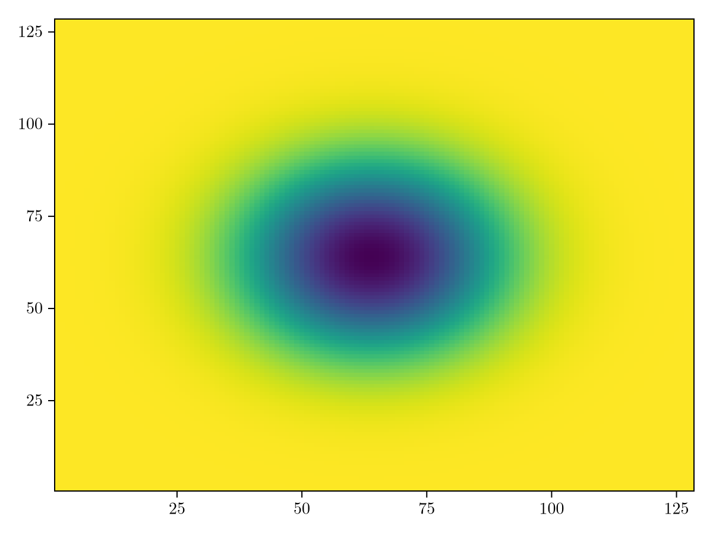
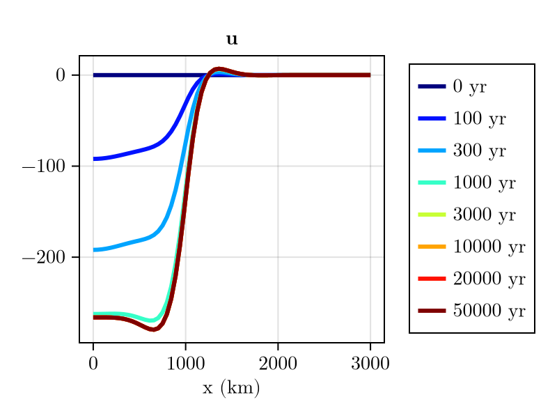

Elastic Lithosphere, Relaxed Asthenosphere (ELRA)
Instead of representing the upper-mantle as a viscous body, ELRA assumes that it relaxes towards an equilibrium state with a characteristic relaxation time $\tau$. In reality, the relaxation time is dependent on the wavelength of the load, which is not accounted for in ELRA. This means that ELRA is only an approximation of the viscous response and is not recommended for real applications. However, it can be used for comparison purposes, since it is still widely used in the literature.
ELRA is compatible with laterally-constant parameters (Le Meur and Huybrechts, 1996), a laterally-variable relaxation time (Van Calcar et al., 2026) or with laterally-variable lithospheric thickness and mantle viscosity (Coulon et al., 2021). The last option however requires to solve a linear system of equations at each update of the equilibrium displacement that is being relaxed towards. This is computationally expensive and therefore not implemented in FastIsostasy. The other two options are implemented and can be used as shown below.
Laterally-constant relaxation time
ELRA with laterally-constant relaxation time is implemented in FastIsostasy by using RelaxedMantle as mantle rheology. The relaxation time can be specified by the user as follows:
using FastIsostasy, CairoMakie
T, W, n = Float32, 3f6, 7
domain = RegionalDomain(W, n, correct_distortion = false)
H_ice_0 = zeros(domain)
H_ice_1 = 1f3 .* (domain.R .< 1f6)
t_ice = [0, 1, 5f4]
H_ice = [H_ice_0, H_ice_1, H_ice_1]
it = TimeInterpolatedIceThickness(t_ice, H_ice, domain)
bcs = BoundaryConditions(domain, ice_thickness = it)
sealevel = RegionalSeaLevel()
solidearth = SolidEarth(
domain,
tau = 3f3,
lithosphere = RigidLithosphere(),
mantle = RelaxedMantle(),
)
nout = NativeOutput(vars = [:u, :ue, :dz_ss, :H_ice],
t = [0, 1f2, 3f2, 1f3, 3f3, 1f4, 2f4, 5f4])
sim = Simulation(domain, bcs, sealevel, solidearth, (0, 50f3); nout = nout)
run!(sim)
println("Took $(sim.timer.t_computation[end]) seconds!")┌ Warning: NetCDF filename does not end with '.nc' and is therefore ignored.
└ @ FastIsostasy ~/work/FastIsostasy.jl/FastIsostasy.jl/src/io.jl:333
Forward run: 0%| | ETA: N/A
sim time [yr]: 0.001
time step [yr]: 0.01
viscous displacement u [m]: -4.662e-8 … 1.22e-9
elastic displacement ue [m]: 0.0 … 0.0
sea-surface perturbation dz_ss [m]: 0.0 … 0.0
barystatic sea level bsl [m]: 0.0
Forward run: 100%|██████████████████████████████████████| Time: 0:00:00
sim time [yr]: 50000.0
time step [yr]: 16240.0
viscous displacement u [m]: -279.7 … 7.321
elastic displacement ue [m]: 0.0 … 0.0
sea-surface perturbation dz_ss [m]: 0.0 … 0.0
barystatic sea level bsl [m]: 0.0
Took 0.12263489 seconds!# `#-` splits the Literate chunk: a Documenter `@example` block renders *either*
# captured stdout (when the last expression is `nothing`) *or* the returned
# value, never both — so a `println` followed by a figure loses its output.
fig = plot_transect(sim, [:u])
Laterally-variable relaxation time
Sometimes people might want to use ELRA with 2D maps of the relaxation time, as suggested by van Calcar et al. (2026). This can be done by using [get_relaxation_time_weaker] or get_relaxation_time_stronger to generate a 2D map of the relaxation time from a 2D map of the viscosity. First let's generate an idealised 2D map of the viscosity, with a Gaussian-shaped low-viscosity anomaly in the center of the domain:
using LinearAlgebra
sigma = diagm([(W/4)^2, (W/4)^2])
log10visc = generate_gaussian_field(domain, 21f0, [0f0, 0], -1f0, sigma)
heatmap(log10visc)
Now let's use this map to generate a 2D map of the relaxation time:
τ_weak = get_relaxation_time_weaker.(10 .^ log10visc) # alternative: get_relaxation_time_stronger
heatmap(τ_weak)
Finally, we can use this map to define a new SolidEarth and run the simulation:
solidearth_weak = SolidEarth(
domain,
tau = T.(τ_weak),
lithosphere = RigidLithosphere(),
mantle = RelaxedMantle(),
)
sim_weak = Simulation(domain, bcs, sealevel, solidearth_weak, (0, 50f3); nout = nout)
run!(sim_weak)
println("Computation time (s): $(sim_weak.timer.t_computation[end])")┌ Warning: NetCDF filename does not end with '.nc' and is therefore ignored.
└ @ FastIsostasy ~/work/FastIsostasy.jl/FastIsostasy.jl/src/io.jl:333
Forward run: 0%| | ETA: N/A
sim time [yr]: 0.001
time step [yr]: 0.01
viscous displacement u [m]: -5.677e-7 … 8.193e-9
elastic displacement ue [m]: 0.0 … 0.0
sea-surface perturbation dz_ss [m]: 0.0 … 0.0
barystatic sea level bsl [m]: 0.0
Forward run: 100%|██████████████████████████████████████| Time: 0:00:00
sim time [yr]: 50000.0
time step [yr]: 590.0
viscous displacement u [m]: -279.7 … 7.321
elastic displacement ue [m]: 0.0 … 0.0
sea-surface perturbation dz_ss [m]: 0.0 … 0.0
barystatic sea level bsl [m]: 0.0
Computation time (s): 0.37015915fig = plot_transect(sim_weak, [:u])
As expected, the center of the domain is displaced faster than the margins!
Copy-pastable code
using FastIsostasy, CairoMakie, LinearAlgebra
W, n = 3f6, 7
domain = RegionalDomain(W, n, correct_distortion = false)
H_ice_1 = 1f3 .* (domain.R .< 1f6)
it = TimeInterpolatedIceThickness([0, 1, 5f4],
[zeros(domain), H_ice_1, H_ice_1], domain)
bcs = BoundaryConditions(domain, ice_thickness = it)
nout = NativeOutput(vars = [:u, :ue, :dz_ss, :H_ice],
t = [0, 1f2, 3f2, 1f3, 3f3, 1f4, 2f4, 5f4])
# laterally constant relaxation time: tau = 3f3
# laterally variable: derive it from a viscosity map instead, e.g.
# sigma = diagm([(W/4)^2, (W/4)^2])
# log10visc = generate_gaussian_field(domain, 21f0, [0f0, 0], -1f0, sigma)
# tau = Float32.(get_relaxation_time_weaker.(10 .^ log10visc))
solidearth = SolidEarth(domain, tau = 3f3,
lithosphere = RigidLithosphere(), mantle = RelaxedMantle())
sim = Simulation(domain, bcs, RegionalSeaLevel(), solidearth, (0, 50f3); nout = nout)
run!(sim)
plot_transect(sim, [:u])